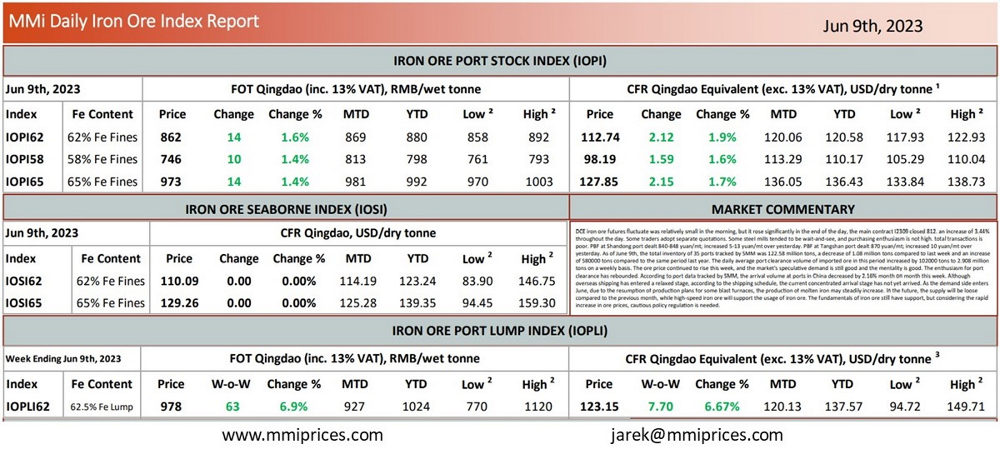

DCE iron ore futures fluctuate was relatively small in the morning, but it rose significantly in the end of the day, the main contractI2309 closed 812. an increase of 3.44% throughout the day. Some traders adopt separate quotations. Some steel mills tended to be wait-and-see, and purchasing enthusiasm is not high. total transactions is poor. PBF at Shandong port dealt 840-848 yuan/mt; increased 5-13 yuan/mt over yesterday. PBF at Tangshan port dealt 870 yuan/mt; increased 10 yuan/mt over yesterday. As of June 9th, the total inventory of 35 ports tracked by SMM was 122.58 million tons, a decrease of 1.08 million tons compared to last week and an increase of 580000 tons compared to the same period last year. The daily average port clearance volume of imported ore in this period increased by 102000 tons to 2.908 mil tons on a weekly basis. The ore price continued to rise this week, and the market’s speculative demand is still good and the mentality is good. The enthusiasm for port clearance has rebounded. According to port data tracked by SMM, the arrival volume at ports in China decreased by 2.16% month on month this week. Although overseas shipping has entered a relaxed stage, according to the shipping schedule, the current concentrated arrival stage has not yet arrived. As the demand side enters June, due to the resumption of production plans for some blast furnaces, the production of molten iron may steadily increase. In the future, the supply will be loose compared to the previous month, while high-speed iron ore will support the usage of iron ore. The fundamentals of iron ore still have support, but considering the rapid increase in ore prices, cautious policy regulation is needed.

Download PDFSource: Metals Market Index (MMi)